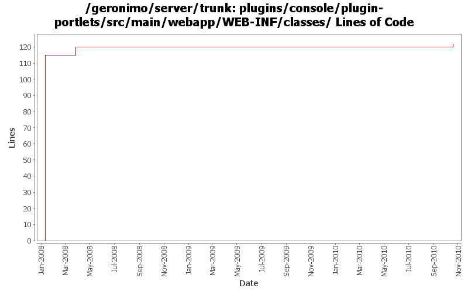

[root]/plugins/console/plugin-portlets/src/main/webapp/WEB-INF/classes

| Author | Changes | Lines of Code | Lines per Change |
|---|---|---|---|
| Totals | 4 (100.0%) | 162 (100.0%) | 40.5 |
| djencks | 1 (25.0%) | 115 (71.0%) | 115.0 |
| dwoods | 1 (25.0%) | 40 (24.7%) | 40.0 |
| vamsic007 | 1 (25.0%) | 5 (3.1%) | 5.0 |
| rwonly | 1 (25.0%) | 2 (1.2%) | 2.0 |
GERONIMO-5540 Enable connecting to a ldap server anonymously on console on Geronimo 2.1 and 3.0
2 lines of code changed in 1 file:
GERONIMO-4474 Pull out the text in the JSP files to resource bundle files. Applied jsp-localization-tomcat6-connector.patch, jsp-localization-securityrealm.patch and jsp-localization-activemq-ra.patch from Gang Yin.
40 lines of code changed in 1 file:
GERONIMO-3901 Security Realms portlet - "encoding" option missing for Properties File Realm
o Added the missing properties
o Merging rev 641804 from branches\2.1
5 lines of code changed in 1 file:
GERONIMO-3732. Move the rest of deployment functionality out of console base and (mostly) into plugin-portlets. Revert the accidental menu name change for looking at web apps
115 lines of code changed in 1 file: